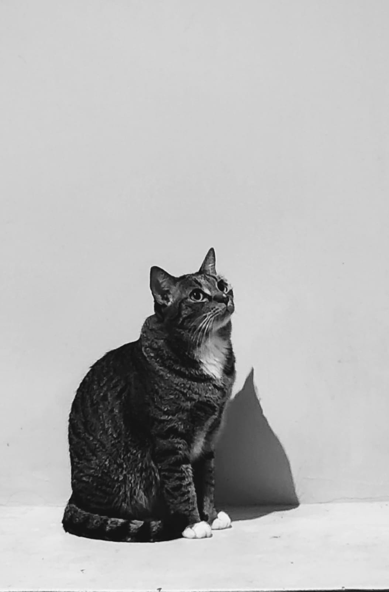

Care
Perawatan yang lembut, konsisten, dan penuh tanggung jawab.

Tentang Casa de Luna
Casa de Luna hadir untuk memberi kucing-kucing terlantar rumah: ruang untuk pulih, bertumbuh, dan menemukan teman serta manusia yang menyayangi mereka—dari dekat maupun jauh.
Kami percaya setiap kucing berhak mendapatkan perawatan yang layak, waktu untuk pulih, dan kehadiran manusia yang mau berkomitmen padanya—sekecil apa pun bentuknya.
Di rumah rembulan ini, perawatan kami mencakup seluruh perjalanan seekor kucing: rawat sehat untuk yang baik-baik saja, rawat sakit untuk masa pemulihan—baik pascaoperasi (termasuk sterilisasi) maupun penanganan kondisi jangka panjang seperti FIP dan CKD—hingga perawatan paliatif bagi mereka yang menghabiskan hari-hari terakhirnya bersama kami.
Perawatan yang lembut, konsisten, dan penuh tanggung jawab.
Setiap anabul memiliki cerita yang layak didengar.
Setiap kucing dirawat bersama—oleh sponsor, donor, volunteer, dan dokter hewan yang berjalan seiring.
Layanan consultancy untuk sementara menjadi bagian dari Casa de Luna Pet Care dan Tentang. Informasi layanan akan diperluas setelah alur konsultasi siap.
Lihat Pet Care →